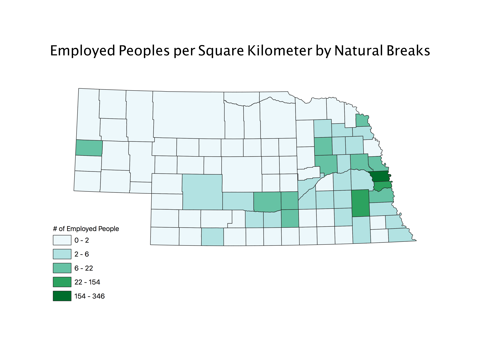
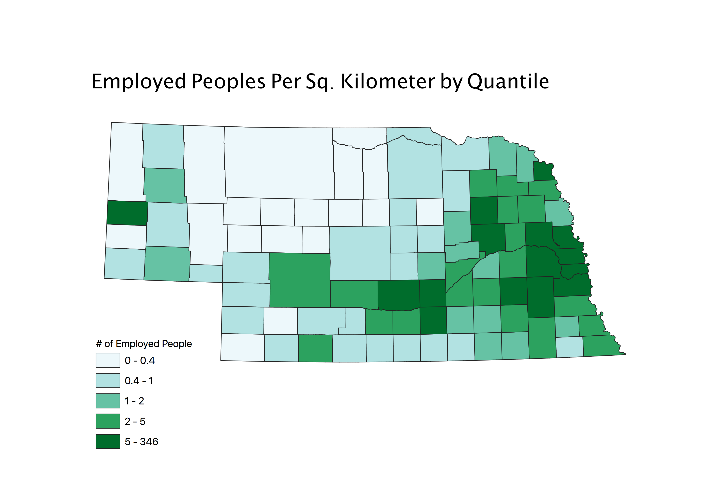
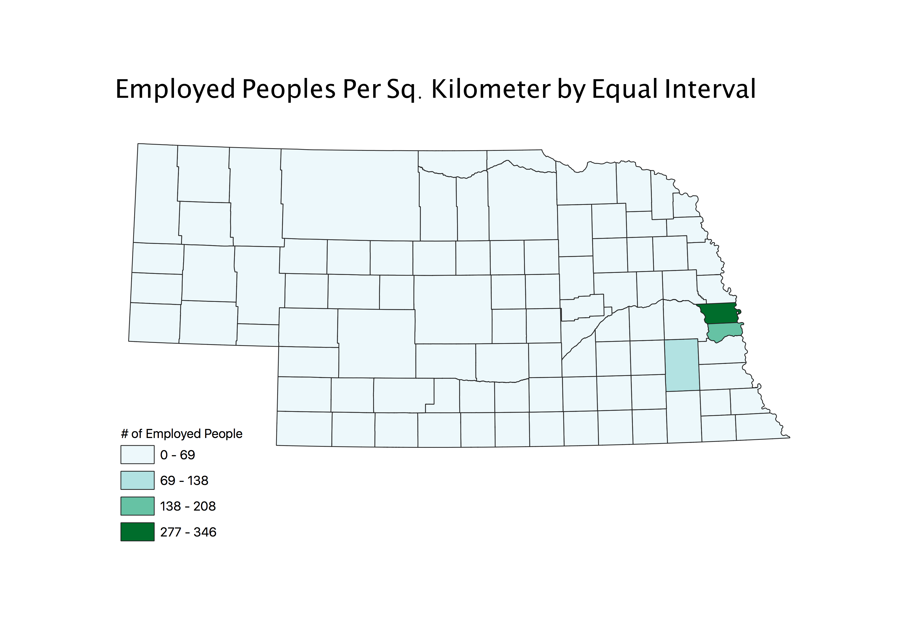

Homework 8: Census Data Ratios and Categories
Hanson Powell
The ratio illustrated by these three maps represents the number of people who are employed per square kilometer in each county in Nebraska. The State of Nebraska is a relatively low populated State with a large land area, so I wanted to illustrate how spread out the population is in many areas of the State. The three classification schemes I used were natural breaks, quantile, and equal interval. Natural breaks groups values by detecting entries which are clustered in a certain range, and then creates legend entries based on these ranges. The quantile scheme assigns an equal or close to equal number of entries to each value range. The equal interval scheme makes each value range equal and then assigns the entries accordingly. I would say that this specific data is represented best by the natural breaks scheme, followed by the quantile scheme. Natural breaks quantifies this data well becasue there are a large amount of low (0-2) values and not many higher values. The equal interval scheme fails in this regard becasue there are not an equal amount of entries for each data range. A dataset with more equal total values in each range would be better shown by the equal interval shceme. A con for natural breaks would come with a data set that does not have many clusters in any specific range. Pros of the quantile scheme are that it shows data in a very balanced way, and allows for a lot of color on the map. A big con however is that it can allow for large variety in the ranges of legend entries.
Natural Breaks

Quantile

Equal Interval
